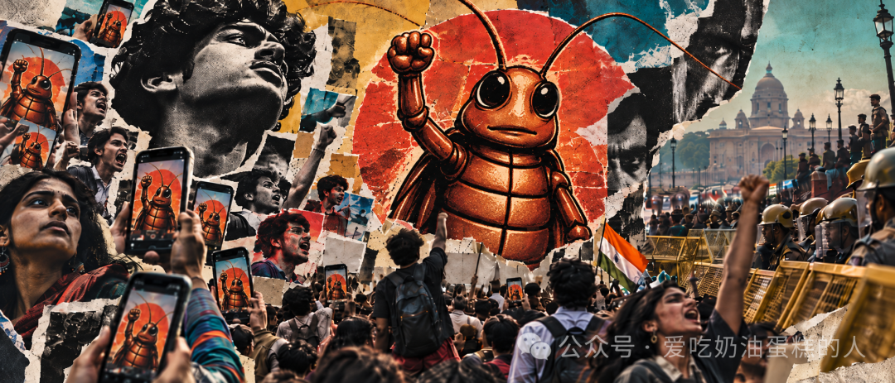
本文撰写时的事件进展截至2026年10月12日16:00（印度时间；北京时间18:30） 事态仍在发展中。
摘要
━━━━●━━━━
2026年，印度青年将最高法院的「蟑螂」污名转化为集体身份，借助meme与AI发动抗议，并在教育部长辞职后将斗争推进至选举制度改革。本文考察「蟑螂人民党」从数字动员、街头静坐到组织建设与跨组织联合的政治实践，并比较孟加拉国、尼泊尔和斯里兰卡青年运动的不同结局。这些运动揭示了街头胜利的政治限度：迫使官员辞职甚至政权更迭，未必能让群众掌握变革的方向。组织能否扎根劳动者的生活，决定了胜利的最终归属。
正文
━━━━●━━━━
我们可以用一百万种不同的方式，重新发明公民不服从。
——「印」阿伦达蒂·洛伊 Arundhati Roy，〈直面帝国〉，2003[1]
2026年5月15日，印度最高法院的一场庭审，给一个尚不存在的青年运动提供了名字。庭审原本讨论的，是一名律师申请获得高级律师资格的问题，但当首席大法官苏里亚·坎特（Surya Kant）谈及某些年轻人时，突然称呼他们是印度的「蟑螂」和「寄生虫」：他们找不到工作，在职业体系里没有位置，他们只能进入社交媒体或公共活动领域，发表那些对国家和他人不切实际的看法。[2]
1995年出生的研究生迪普克（Abhijeet Dipke）率先发起了对这位大人物的反击：如果所有蟑螂联合起来呢？一个戏仿莫迪政权「印度人民党」（BJP）的「蟑螂人民党」（Cockroach Janta Party，CJP）由此诞生。[3]
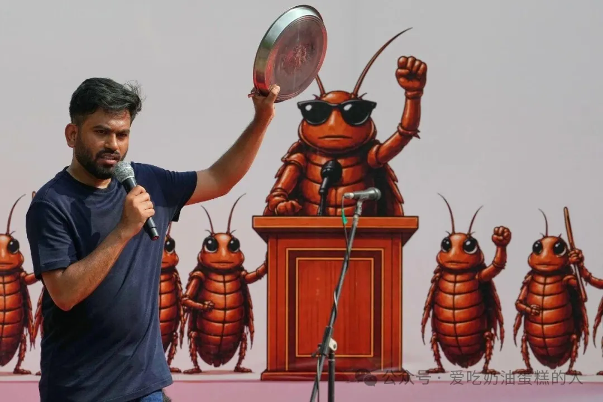
2026年6月20日，新德里，「蟑螂人民党」创办人迪普克在要求教育部长普拉丹辞职的静坐抗议中，高举金属盘并敲击发声。图源：Anushree Fadnavis摄，路透社（Reuters），2026年6月20日。
同一周，另一场危机正在印度的考场里酝酿。5月12日，国家考试局宣布取消当月3日举行的全国医学本科入学考试，原因是试题涉嫌泄露，超过220万考生受到影响。取消决定当即引发学生组织的抗议。[4] 对于那些把多年备考押在一张试卷上的青年，考试原本是少数仍然许诺凭努力改变命运的道路，如今变得不再值得信任。
CJP的线上网络集结立即与已经存在的考试抗议汇流，早已发生的学生运动因而有了新的公共名称——他们称呼自己为「蟑螂」——也有了明确的追责对象：教育部长普拉丹（Dharmendra Pradhan）。要求普拉丹辞职、改革考试制度，成为本轮运动的核心诉求。[5]
5月16日，CJP的社交账号和报名链接火速上线；6月6日，支持者在新德里举行集会；6月20日，一场即将震动整个南亚次大陆的示威在静坐中展开。[6][7]
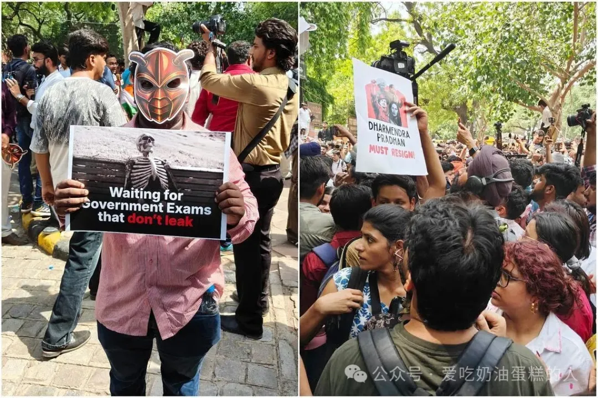
2026年6月6日，新德里简塔·曼塔，参加「蟑螂人民党」（CJP）抗议的青年戴着蟑螂面具，举起写有「等待一场不会泄题的政府考试」的标语，要求印度政府对考试舞弊负责。图源： The Straits Times，2026年6月6日现场报道。
7月25日，普拉丹辞职。[8]当印度的Z世代把这些位高权重的人拉下马，抗议取得了可辨认的成果，第一轮街头高潮也随之走向沉寂。但印度的选举、教育以及就业制度依旧固若金汤。
然而，CJP并没有随之消失：9月，它围绕选民名册争议重新动员——印度选举委员会最新推行的名册修订案，被质疑不正当地删除合资格选民、损害投票权，并使执政的印度人民党获益；选举委员会则否认违规。[9] 10月，CJP又与学生组织公开联合，要求首席选举委员库马尔（Gyanesh Kumar）辞职，并改革选举委员任命程序和选民名册制度。[10]
这样的场景让人联想到南亚近年频发的政治震荡：2022年斯里兰卡的「阿拉加拉亚」（Aragalaya，意为「斗争」）、2024年孟加拉的学生抗议、2025年尼泊尔的青年运动，它们都曾借助数字媒体聚集公众注意，有的还导致政权更迭。共同的世代标签使这些事件看起来彼此相接，但其内在差异往往被热衷于窄化政治新闻的媒体忽视。当代南亚社会运动的经验、技术与教训往往淹没在好莱坞式的娱乐叙事或love&peace的治理叙事中。[11][12][13]
回到印度，这块次大陆也有自己的街头政治史：2011年反腐运动、2019—2020年反《公民身份修正法》抗议，以及持续一年多的农民运动。[14][15][16]CJP进入的是一片已有组织、经验和创伤的政治空间。受教育青年承受的就业压力让经济焦虑点燃了愤怒的土壤，但无法解释他们为什么在此时以「蟑螂」之名走到一起。
一个污名如何变成共同身份，一次抗议怎样转化为可持续的政治现场，一次胜利之后，Z世代又凭什么要求「继续革命」？在这场运动内部，存在哪些战术上的新发明，又有着怎样的战略选择与政治困难？
我们是「蟑螂」，我们来了
━━━━●━━━━
「蟑螂」的侮辱性称谓之所以引发巨大争议，首先与说话者的位置有关。来自最高司法机关的言论，具有普通网暴所没有的分量。在那段讲话里，职业失意与公共批评的资格被强行联系在了一起：没有被现有秩序接纳的人，仿佛也缺少议论这个秩序的正当性。这套有关职业、参与和批评权的「理论」，本是意识形态国家机器规训失意者的惯用话语，印度青年对此并不陌生，但当大法官亲口坦白权贵阶层对人们的蔑视时，一个抵抗的支点便在房间暴露，所有人都看见了那头大象。
迪普克抓住了这次机会。
来自体制内的负面命名——「蟑螂」——被放进了集体的第一人称：「我们都是蟑螂」。「既然你们排斥蟑螂，那就成立我们蟑螂的党，建设一个属于蟑螂的世界。全世界的蟑螂联合起来！」于是，权威给这个词带来的新闻价值，在战术上被迅速借用，体制对群众的污名为反体制的运动提供了传播的起点，司法权威的社会分类失去了原本的解释控制权，被Z世代重新用于反对它的政治动员。
在CJP早期的招募帖里，失业、懒散、长期在线和擅长吐槽被作为「入党」资格，那些原本用于嘲笑年轻人的词汇，如今成了他们彼此相认的暗号。[17] 这一切的荒诞感让「参与」变得更加容易：只要说「我也是蟑螂」，就可以把自己的经历——求职挫折、考试焦虑或对权威的不满——交给同一个名称，而不必首先接受一套完整的党章与纲领。对政治立场尚未一致的青年而言，这是一种可以暂时共同使用的身份，用于识别「我们」相似的处境。
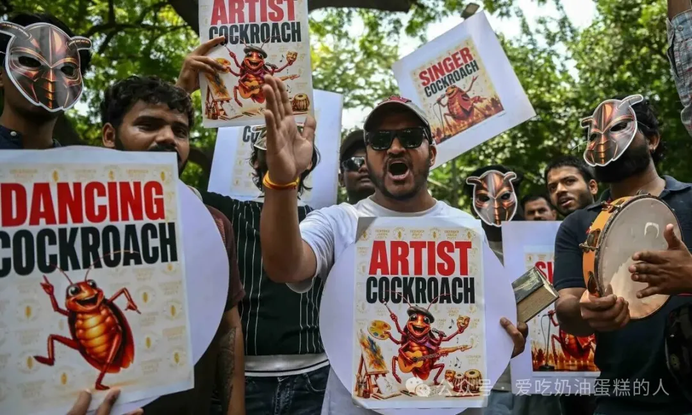
2026年6月6日，新德里，CJP支持者展示印有跳舞蟑螂、艺术家蟑螂等形象的抗议海报。法新社（AFP），刊于巴基斯坦《黎明报》（Dawn），2026年6月6日。
但「人民党」的外壳并非毫无用处。正式政党惯常以徽章、领袖照片和承诺代表人民，CJP借用了这一整套现代政党制度的外观，让那些被当局说成毫无价值、无所事事的人也以政治发言人的身份登场。CJP的网站同时也列出了保护合法选票的制度要求。[2] 一个玩笑借用体制当局的外形，反过来用最严肃的态度拷问谁有资格代表人民。
两年前的孟加拉，曾有过一次更危险的话语反转。2024年公务员职位配额抗议——反对给「自由战士后代」[18]保留公务员岗位名额——期间，总理哈西娜（Sheikh Hasina）有关「拉扎卡」（Razakar）——叛国者——的言论激怒了学生。这个词与1971年独立战争中协助巴基斯坦军方的人密切相连，带着沉重的叛国污名。一部分抗议者以反讽口号自称「拉扎卡」，随后又把口号转向追问「谁这样说（我们）？独裁者！」。哈西娜则继续指责学生应当为这种自称感到耻辱。[19][20]
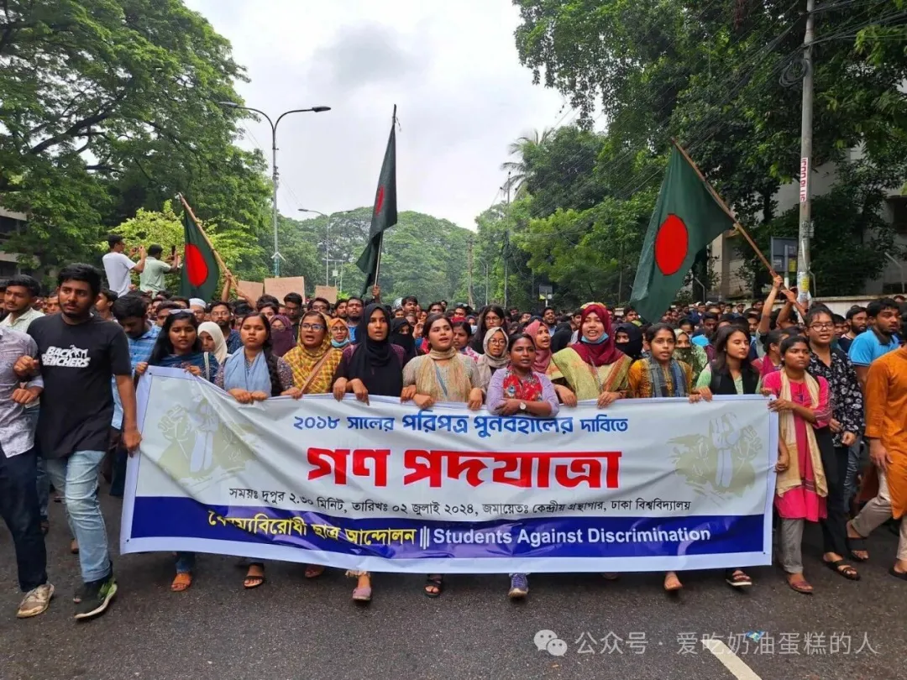
2024年7月2日，孟加拉国达卡大学，学生举着国旗和反配额横幅举行游行，要求改革公务员招聘制度。图源： The Business Standard，2024年7月2日。
同一个词，既能帮助参与者拒绝羞辱、公开自己的立场，也可能被当权者用来论证他们理应受到惩罚，它是斗争双方用以凝聚各自共识的危险词汇。对抗议者来说，接受一个不被当局喜欢的词语，意味着拒绝他们对「我们」的命名与分类。
此后，争论迅速越出口号本身。当警方镇压造成平民伤亡，学生遭遇逮捕，运动的诉求迅速从修改专属二代们的配额扩展到追究政府责任。随着最高法院大幅削减争议配额，抗议一度暂停，但学生很快重返街头，要求释放被捕者、为死者伸张正义，并最终将诉求集中让哈西娜下台。8月5日，哈西娜逃往印度，她持续十五年的政权就此被推翻。[21] 三天后，被斥为「叛国者」的学生，最终参与了新政府的组建。[22]
从这个结果回看，「拉扎卡」的反讽自称，同样是学生拒绝接受官方污名的一次公开表达。将一个来自权威的标签反过来使用，让分散的个人取得可以共同署名的方式。对权威污名话语的反转，为接下来的媒介制作与现实动员准备了材料。这是印度Z世代正在实验的战术。
走向街头的meme：怎样组织一场抗议？
━━━━●━━━━
迪普克发布过一张AI生成的meme图片：一只戴着墨镜的蟑螂，向成群的蟑螂发表讲话。原本躲在角落、等待被清除的昆虫，就此占据了政治领袖的位置。meme使「如果所有蟑螂联合起来」成了能够被观看、模仿和改编的场景。据迪普克回忆，他借助Claude和ChatGPT，在很短时间里就完成了CJP的视觉形象和宣言初稿。[3][23]
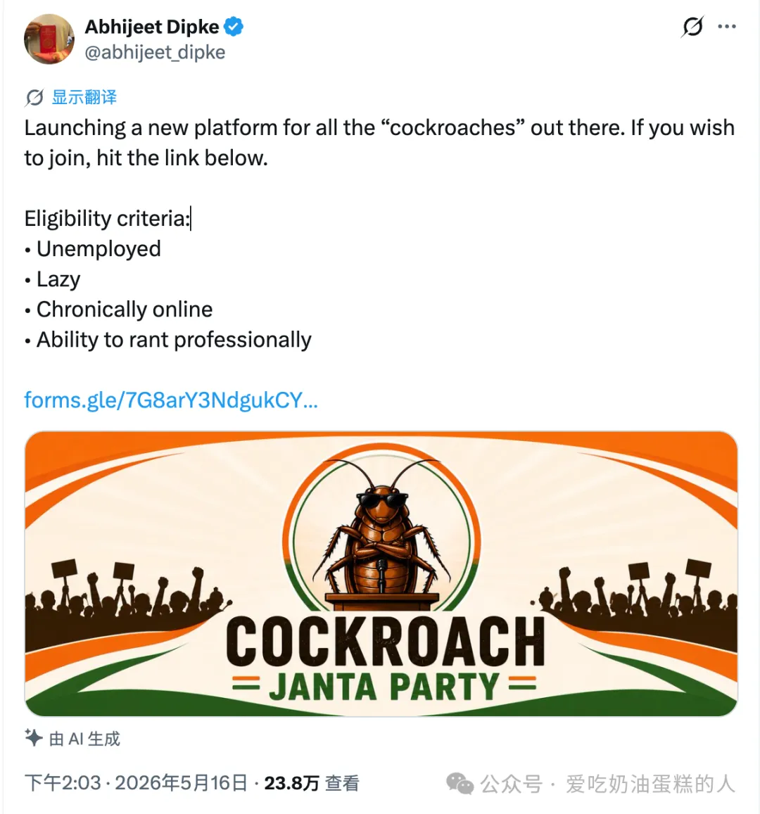
迪普克的X账号，截图于2026年10月13日。
所谓meme（迷因），不限于表情包，更接近一段能够被反复复制、变形和传播的文化材料。无数印度青年着手制作新的「蟑螂」meme，它们都保留同一只蟑螂，但改变了配文和姿态，「蟑螂」也因此不断吞下不同人的考试挫折、求职经验和政治不满。一个受众即使没读过发起者的完整宣言，也能看懂后来的这一系列改编。[23]
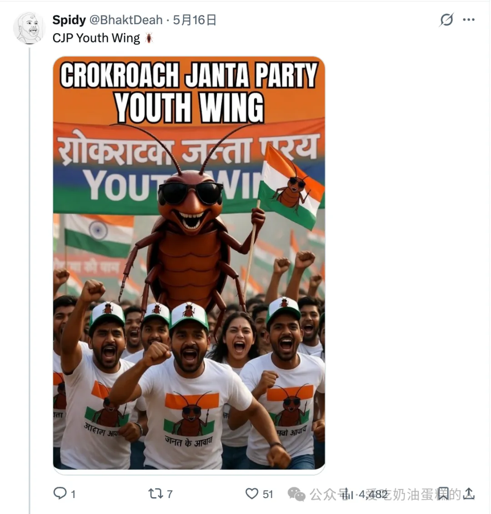
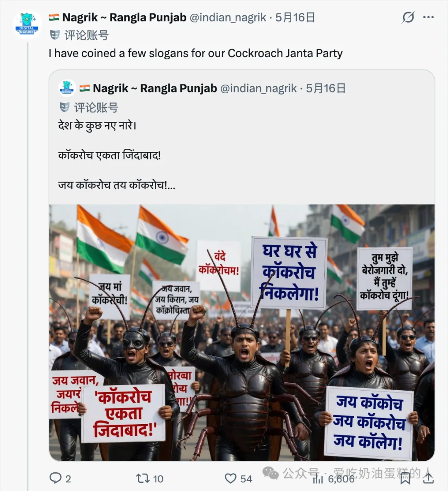
5月16日，迪普克在X上发布招募帖，附上Google报名表，邀请其他「蟑螂」加入，数小时内就有大约15000人报名。[24]
于是，一套组织草根政治动员的机制在印度浮现：
（1）占据来自权威的新闻价值，改变词语的解释方向
（2）借助AI迅速制作大量meme、视频等宣传材料，引起公众注意；
（3）戏仿执政党的外观、撰写招募文案，让人识别出「我们」的共同处境；
（4）上线报名链接，为把「笑话」推向一场街头运动做动员准备。
制作、改编、分享与报名之间形成了连续的行动流，这是CJP早期传播的关键。迪普克提出的「笑话」，逐渐成为其他人能够使用的表达资源。一段原本只属于个人的挫败经历，就这样随着图片的转发，被带到更多人面前，成为「我们」公共叙述的一部分。随着生成式人工智能的普及，制作政治宣传品所需的时间和成本被大幅缩减，AI降低了普通人发起一场运动的门槛。
然而，这些账号的命运，并不完全掌握在运动者手中。据CJP后来提交的诉状，账号创建几天后便收到在印度被屏蔽的通知。印度政府官员宣称，这项措施涉及有关部门提出的「国家安全」。[7] 在全民上网的21世纪，虽然社交媒体创造了低成本的参与入口，但政治运动持续面对着数字监管的政治风险。
参与者的账号可以能遭遇限流、禁言甚至彻底删除，它随时可能停摆，但抗议营地则必须每天都有人持续留守。简塔·曼塔营地的静坐开始后，17岁的塔库尔（Tanya Thakur）坚持夜间给人递水，清理营地里的垃圾，她还从左翼学生组织的书摊借书阅读。19岁的库马尔（Vivek Kumar）暂停了零工和夜间摩的的工作来参加抗议。他们吃饭靠支持者送来的食物，洗澡则借助附近锡克教谒师所，伤口由现场医生照看。[6] 这些细节使「参与」具有了身体和经济上的重量。
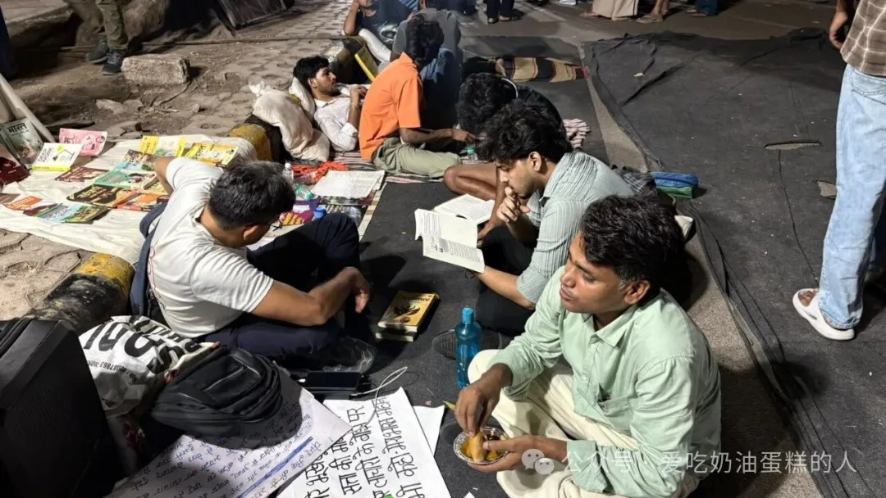
2026年7月15日凌晨，新德里简塔·曼塔，CJP的青年支持者在抗议营地里阅读、进食和休息。为了维持长期静坐，参与者在街头建立了临时的生活与互助空间。图源： India Today，〈我在CJP的简塔·曼塔抗议营地当了一夜「蟑螂」〉，2026年7月15日。
7月21日，《印度快报》记者在现场碰到外卖骑手塔库尔（Ajay Thakur）。订单备注写着「来自喀拉拉邦的爱」，这是他那天向抗议现场配送的第五单。另一名骑手拿到的要求更简单：把食物交给还没有吃饭的人。这是一种具体的技术变化。政治参与不再要求所有支持者跨越整个印度来到德里，便能承担一顿午饭的费用并让物资到场。但对资源的协调依旧依赖人们对现场的组织。CJP一度请求公众暂时停止配送，以免食物浪费。[26]
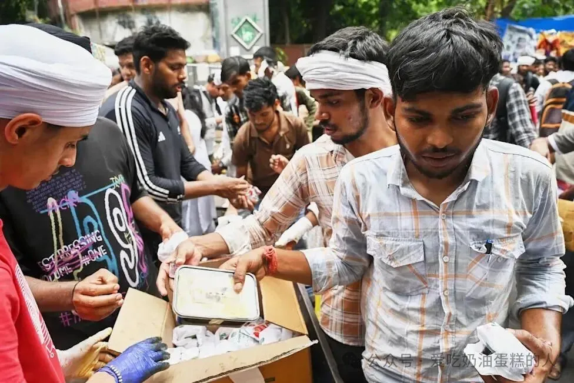
2026年7月21日前后，简塔·曼塔抗议现场，来自印度各地的支持者通过外卖平台购买食物，骑手将餐食送到路障附近，再由志愿者转交营地中的抗议者。图源：雷瓦·塔卡尔（Reva Thakkar）摄，The Indian Express，2026年7月22日。
现场怎样被公众看见，也有相似的分工。对「御用媒体」的不信任，使独立媒体获得了进入营地的机会。一些独立记者在集会人数很少的时候就毅然来到现场。《电线报》记者库马尔（Vipul Kumar）用手机、麦克风和独脚架工作，遇到网络限制就蹲到门口继续向编辑部发送素材。[23] 这些记者把镜头留在每天仍有人值守的营地，而不仅仅追逐与警方发生冲突的瞬间。抗议获得了一种持续的公共记录。
因此，除了「用meme造反」，运动的实际运行还依靠更早的数字基础设施、独立媒体，以及大量无法自动化的照护劳动。技术工具无法取消分水、送餐、照料伤者的劳动，更无法替代参与者在互动中得以建立的信任。但在一次胜利之后，伙伴之间仍将面对「是否继续」的战略选择。
从考试到选举：胜利后的继续革命
━━━━●━━━━
2026年的医学本科入学考试泄题危机，使考生耗费的岁月、家庭的投入和一代人的上升期待集中到了一个明确的问责对象上：教育部长。7月20日，向议会进发的游行遭警方阻止，冲突进一步扩大了社会关注；7月25日，印度教育部长普拉丹辞职，营地集会随之结束。[8] 参与者第一次看见，一群「蟑螂」的集聚能够带来剧烈的高层人事变动。
但当普拉丹真的下台，胜利让人们走到一起的理由瞬间消失。那些仍然留在街头的人，必须重新决定，他们究竟要继续争取什么。有的人把部长辞职视为运动的结束，有的人则会继续追问，教育改革应当由谁监督。
7月底之后，抗议运动走向沉寂，但行动并未全部终止。8月初，迪普克在一次策略会议后表示，CJP暂时不会进入选举政治。他给出的理由是：印度民众对传统政治机构已经失去信任，而一旦组织成为正式政党，他还担心当局会通过「调查」打击运动的领导者。[27]对刚刚取得一次胜利的「蟑螂」来说，维持压力团体的身份，至少能让CJP暂时避开选举阵营常见的「二选一」界线，继续把他们留在同一个政治空间里。
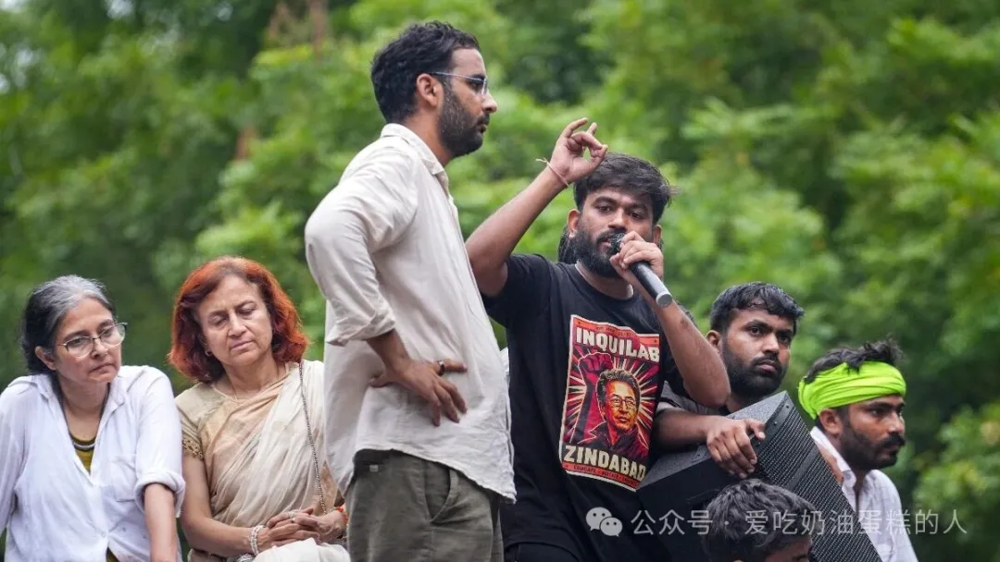
2026年7月21日，新德里简塔·曼塔，CJP创办人迪普克身穿印有「革命万岁」（Inquilab Zindabad）的上衣，向现场支持者发表讲话。图源： India Today，2026年7月21日抗议现场报道。
不参加选举，并不意味着放弃组织建设。8月6日，CJP在马哈拉施特拉邦公布了首个全国组织架构，确立全国召集人及组织、法律、媒体、研究、技术等部门的负责人，并计划建立各邦与城市的协调机构。组织还宣布开展全国性的青年意见征集，准备形成改革纲领。[28] 这群夏天靠报名表和街头集会找到彼此的人，开始尝试在营地解散后继续革命。
在这份组织规划中，还有一项决定着CJP未来道路的战略安排：同其他政治组织建立联盟。8月6日，CJP提出未来青年改革纲领的四个方向：
（1）教育改革；
（2）教育与就业衔接；
（3）制度问责；
（4）同政党、学生团体和公民社会组织建立联盟。
它还计划重新联系那些曾经声援「蟑螂运动」的组织，讨论今后的合作。[28]
8月中旬的贾坎德邦考试抗议，为这种「非党派」的定位创造了一次实践机会。CJP派出了约25人的团队，但坚持让当地学生保留运动的领导位置。迪普克表示不希望「劫持」当地抗议，CJP法律负责人辛格（Ratna Singh）则强调，组织可以在台下提供帮助，不必由全国知名的运动领袖占据主席台。代表团的职责是向当地学生了解诉求，交流抗议现场的管理经验。[29] 然而，当地学生组织已经发生分裂，一些团体也不欢迎CJP介入。德里的成功没有给「蟑螂人民党」一张通行全国的凭证。每走进另一座新的城市，CJP都需要面对当地的既有议题、基层组织与政治分歧。
8月公布的组织名单和地方计划，究竟能够扎根多少城市，仍是一个悬而未决的问题。但CJP没有因为一次成功而彻底放弃对印度政治的介入，当9月选民名册修订争议爆发，「蟑螂」已经拥有一批继续工作的组织者，也积累了同其他学生运动接触的经验。8月的计划并不能证明人们早已预想到了两个月后的大联合，但至少说明，跨组织合作是CJP在第一次胜利后主动追求的战略方向。
在选举委员会最新的《特别密集修订》中，约1.3亿条选民登记记录在本轮修订中被删除。抗议者质疑这种除名行为不当地剥夺了部分印度人的投票机会并使执政党获益。[9] 从考卷转向选票，表面上跨越了两个截然不同的领域。但保护合法选票，本来就写在CJP的早期宣言里。[2]
实际上，两个抗议阶段之间存在更为紧密的联系：考试承诺以规则分配教育机会，选举承诺通过规则分配政治代表权，当Z世代质疑这些程序是否公平时，个人前途与公共制度便汇流到了一起。然而，即使CJP能够把「考试」与「选举」同时纳入对体制的质疑，考生也不会因此自动变成选举议题中的积极分子，新的动员仍然需要重新解释共同利益。
10月的大规模联合使运动议题的扩展有了更可见的组织形式。10月6日，多个左翼学生组织发表参加抗议的共同声明；7日，CJP与全印学生协会（AISA）、全印学生联合会（AISF）、印度学生联合会（SFI），以及与平民党有关联的替代政治学生协会（ASAP）共同举行记者会。[30][31] 这并非双方的第一次接触：夏季的抗议营地里已经有左翼学生组织的书摊、帐篷和成员。如今，彼此在抗争岁月的共同在场发展成了公开的政治合作。
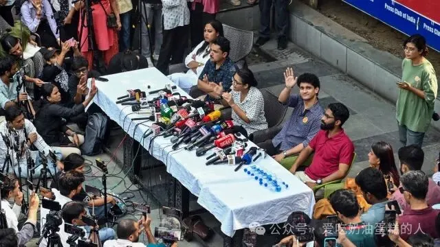
这种合作对双方意味着什么？CJP拥有由网络污名反转而来的醒目身份，以及跨地区的公众关注；学生组织则拥有校园组织经验和本地成员网络。我们暂时还不知道在这次抗议中它们如何具体分工、是否建立了共同的决策机构；名义上的并肩行动，究竟能否发展成共同决策，仍是一个需要持续关注的重要问题。
CJP共同召集人达斯（Saurav Das）在记者会上表示，即使首席选举委员库马尔辞职，行动也不会终止，运动将致力于推动改革选举委员任命程序和选民名册制度。[30] 抗议者正在试图避免把第二轮诉求再次收缩为一个具体官僚的去留，但也让协调更加困难：制度改革需要持续讨论具体方案、决定可以接受哪些妥协。让一次运动既保持开放的联合，又能形成有效的集体决定，远比同意一句辞职口号复杂。
街头与政权的汇流：南亚青年运动的不同命运
━━━━●━━━━
在CJP出现以前，印度的街头早已发生过许多不同的政治运动。2011年反腐运动曾围绕是否走向政党政治发生分化，平民党（AAP）就是这场运动的政治结果。2019—2020年的反《公民身份修正案》的抗议依靠社区网络维持持续静坐；2020—2021年农民运动则在多种农民组织协调下保持了长期的营地、物资与谈判体系。
长期静坐、占据公共空间、争取社会声援，都是印度街头政治早已熟悉的战术。CJP的特别之处，是通过反转污名话语、利用AI制造meme式政治宣传，靠一场网络戏仿取得全国关注，再摸索怎样与有组织经验的政治力量合作。这条道路的后半程仍在实验中。
南亚的其他邻国提供了不同的参照。2024年孟加拉国学生运动推翻哈西娜政府以后，部分学生领袖进入临时政府，并在次年成立了国民公民党（NCP），试图把街头运动的影响转化为选举力量。然而，2026年2月的议会选举中，NCP仅获得6个席位，胜利属于拥有成熟基层组织的孟加拉民族主义党（BNP）。[32][33] 为了争取选票，NCP选择同伊斯兰大会党（JI），又导致部分成员因意识形态分歧而愤然退出。
尼泊尔则走向了不同的结局。2025年的青年运动推翻奥利政府后，临时政府组织了新的议会选举。2026年3月，民族独立党（RSP）赢得275个议席中的182席，前首都市长沙阿（Balendra Shah）出任总理。[34] 虽然青年抗议改变了尼泊尔政治竞争的格局，Z世代的诉求也通过议会制度进入了政府，但政治代表权也随之集中到一个拥有自身纲领和领导层的政党手中。
2025年9月，加德满都，一名年轻女性在反腐败示威中高举尼泊尔国旗、呼喊口号。图源：Georgia Public Broadcasting，转刊美国全国公共广播电台（NPR）相关报道，2025年9月20日。
斯里兰卡2022年的「戈塔走人村」（Gota-go-Gama）曾经依靠图书馆、充电点、厕所与清洁轮班，维持了长期的街头占领。然而，当抗议者迫使总统辞职后，却没有产生统一的政治领导和过渡方案。领导权再次回到旧议会手中，他们选举维克勒马辛哈（Ranil Wickremesinghe）继任总统，新政府随之而来的镇压再次削弱了运动。直到2024年，拥有既有政党组织基础的左翼全国人民力量（NPP）才通过选举取得政权。[35]
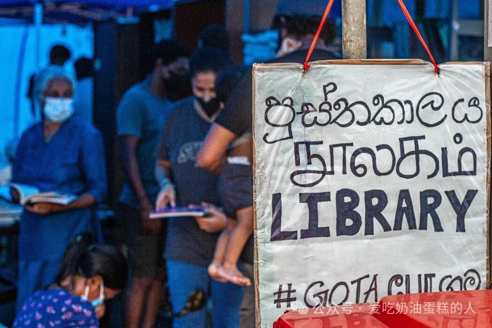
2022年5月，斯里兰卡科伦坡，示威者在总统秘书处附近的「戈塔走人村」抗议营地建立公共图书馆。志愿者通过社会捐赠收集图书，使营地成为长期抗争期间的公共阅读与交流场所。图源：Arab News，〈斯里兰卡青年抗议者以书籍作为变革的「武器」〉，2022年5月5日。另可参阅斯里兰卡《星期日时报》对该图书馆的实地摄影报道。
当代南亚的经验说明，街头的胜利与政治权力的转移，没有必然的连续性。运动创造的政治机会，可能由不同于最初抗议者的力量掠夺和使用。这也使CJP「非党派」的战略选择具有了更现实的意义。但在不同政治组织之间建立合作，仍将遭遇共同纲领与领导权的分歧。印度Z世代正在面对的战略难题因此不是能否再次制造一条引爆全网的热搜，而在于一次动员结束后，多少人还愿意称呼彼此为「同志」，以及他们是否能够共同决定下一次行动究竟为什么而继续战斗。
结语：我们必须知道革命属于谁
━━━━●━━━━
10月10日，刚刚公开联合的CJP与学生组织，就在德里的封锁中迎来了第一次考验。
抗议地点简塔·曼塔被武装封锁，迪普克等CJP领导人在航班抵达后即被政府拘留。德里部分地铁和铁路服务中断，局部网络受到控制，政府则以维护社会秩序解释对宪法赋予公民权利的限制。[9]
一些参与者不再能等到新的统一安排，原定的大型集会也未能按计划进入中心场地。来源不同的小规模游集会仍在起伏不定地进行着，[36] 但分散发生的行动暴露出运动组织者在交通封锁、信息中断下进行跨组织协调的困难。
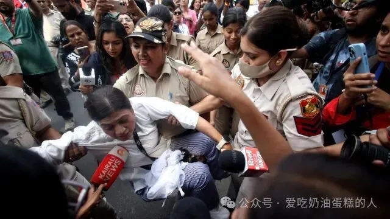
2026年10月10日，新德里班格拉·萨希布谒师所附近，警方拘留要求首席选举委员库马尔辞职的CJP支持者。图源： Praveen Khanna摄，The Indian Express，2026年10月10日。
经过一夜的拘留，11日上午，迪普克和另外两名CJP领导人获释。据CJP法律负责人说，本次释放附有一年内不得「破坏和平」的条件。[37][38]警方当天继续在德里拘留参加零星集会的人，孟买、加尔各答等其他城市也爆发了小规模示威。11日晚，警方继续以集会未经许可为由拘留抗议者。[39]印度最高法院也在此时介入运动。在特别听证中，最高法院要求地铁和互联网服务维持正常，强调拘留必须依照法定程序进行，并要求当局解释此前限制公共交通的措施。[40]
10月12日，德里警方依据前一天签署的命令，正式取消了简塔·曼塔作为指定抗议地点的资格，改以拉姆利拉广场等三个地点作为新的示威场所。[41]这处曾经容纳过印度无数抗议者、也见证了CJP第一次胜利的广场，如今被一道行政命令从官方指定的抗议地图上抹除。
迪普克对此回应：「整个印度都将成为简塔·曼塔！」[42]
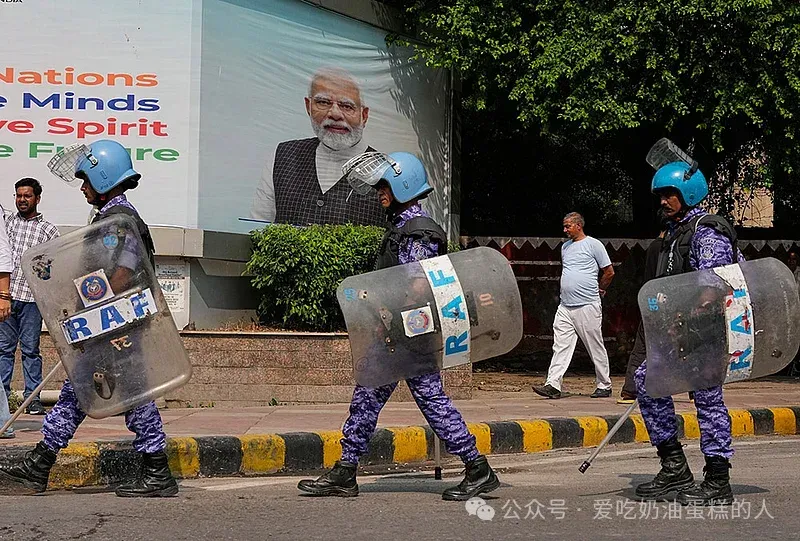
2026年10月12日，新德里，印度防暴警察手持盾牌沿街部署，准备应对反对党要求首席选举委员库马尔辞职的示威活动。图源：Manish Swarup摄，美联社（AP），刊于《展望》杂志（Outlook India），2026年10月12日。
与此同时，国大党及其他反对党力量向最高法院举行游行，要求追究选举委员会的责任。CJP则要求警方在24小时内明确下一场和平示威的日期和时间。[43]街头运动与议会反对派的行动开始围绕同一争议汇流。越来越多的社会力量开始与「蟑螂」站在一起。
「meme能否改变国家」已经不再是一个玩笑，但问题从「meme怎样把人带上街头」转变为了警察国家的限制、运动内部的组织合作问题。能否继续革命决定了「改变国家」的真实前景。但究竟是谁有条件一再回到街头？
为了参加抗议，19岁的维韦克停下了赖以维持生计的零工。这提示了参加运动的生活成本。国际劳工组织与印度人类发展研究所的报告显示，2023年印度15—29岁、大学毕业及以上青年的通常状态失业率为28.4%。[44] 就在「蟑螂」出现前的4月，德里周边的制造业工人已经围绕工资、加班费和劳动条件展开激烈抗议。[45] 学生焦虑「毕业即失业」，工人担心已有的工作无法支撑住房、医疗与教育。他们都必须在同一个劳动力市场中谋生，却未必会因此走进同一场抗议。在印度，这些差别还与种姓制度彼此交织。迪普克本人就出身在一达利特家庭，[10]人们不禁期待，一个有着低种姓领袖的青年运动，能否让更多受到种姓与阶级关系制约的人实际参与政治决策。
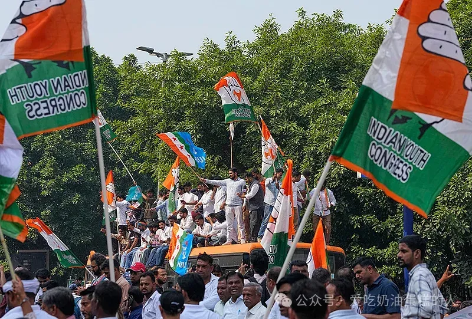
2026年10月12日，新德里，印度国大党及其青年组织的支持者站在公共汽车车顶，挥舞党旗并高呼口号，准备向最高法院游行，要求首席选举委员库马尔辞职。 图源：Manish Swarup摄，美联社（AP），刊于《展望》杂志（Outlook India），2026年10月12日。
运动如何走出城市受教育青年的圈子，进入更广泛劳动者的工作场所和日常生活，需要运动者亲自完成，这并不会随着网络声量的增长而自动实现。政党、学生组织与工会之间，并不存在依靠共同愤怒就能轻易抹平的差别。南亚几次「Z世代革命」显示了街头压力可能迫使政府退让甚至政权更替，但当广场上的人群散去以后，那些从未有条件长期站在广场上的人——被加班困住的工厂工人、无法停工的日结劳工、挣扎在贫困线的农民、承担无偿家务与照护劳动的妇女——他们的要求又将由谁带进政治生活？
今天，印度的「蟑螂」已经学会了在侮辱中发声，也学会了在一次胜利以后重新聚集。然而，无论是选民名册上的名字，还是抗议现场中的身影，都不能代表所有人的政治生活。那些因为贫困、劳动、性别和种姓处境而无法长期留在街头的人，究竟如何才能参与决定「我们」与国家的命运？
你不能把农民当作实现自己目的的工具。你必须使他们明白，这场革命属于他们，也必须为了他们的利益。
——「印」巴加特·辛格 Bhagat Singh，〈致青年政治工作者〉，1931[46]
1. 阿伦达蒂·洛伊（Arundhati Roy）：〈直面帝国〉（Confronting Empire）。世界社会论坛演讲，2003年1月27日；Outlook India，2003年1月30日。
2. 《印度快报》解释版编辑部（Explained Desk）：〈从诞生到封禁：蟑螂人民党迄今发生了什么〉（Explained: From Birth to Ban, All That Has Happened with the Cockroach Janta Party So Far）。The Indian Express，May 24, 2026; updated May 26, 2026。 关于「蟑螂」言论的对象及事后澄清： 坎特在2026年5月16日声明，认为部分媒体误引了他5月15日庭审中的口头评论，强调自己批评的是通过伪造、虚假学历进入律师等专业领域的人，并非印度失业青年或年轻人整体；7月25日，他在接受《印度快报》采访时再次重申，评论针对的是持虚假法学学位进入法律职业者。这属于坎特对原话语境和对象的解释，应与庭审中有关「找不到工作」「从事媒体及社会活动」等实际用语，以及抗议者对「蟑螂」称谓的政治性重新占有区分开来。参见：《印度快报》记者部（Express News Service）：〈「媒体误引了我」：坎特澄清关于失业青年「蟑螂」的言论〉（‘Misquoted by Media’: CJI Surya Kant Clarifies ‘Cockroaches’ Remark on Unemployed Youth）。The Indian Express，2026年5月16日，5月17日更新。；阿南塔克里希南·G（Ananthakrishnan G）：〈首席大法官重申：「蟑螂」言论只针对持假法学学位者，并非所有青年〉（CJI Reiterates: Cockroach Remarks Only for Fake Law Degree Holders, Not All Youth）。The Indian Express，2026年7月25日。。
3. 亚什拉杰·夏尔马（Yashraj Sharma）：〈「蟑螂人民党」：印度最高司法官员的言论引发讽刺与抗议〉（‘Cockroach Janta Party’: Top Indian Judge’s Comment Sparks Satire, Protest）。Al Jazeera，May 20, 2026。
4. 阿比纳亚·哈里戈温德、马亨德尔·辛格·曼拉尔（Abhinaya Harigovind and Mahender Singh Manral）：〈医学本科入学考试因泄题被取消，政府下令重考并启动调查〉（NEET-UG Scrapped over Paper Leak, Govt Orders Fresh Exam, CBI Probe）。The Indian Express，May 12, 2026，updated May 14, 2026。
5. 美联社（Associated Press）：〈警方镇压抗议之际，印度蟑螂运动继续在首都静坐〉（India’s Cockroach Movement Holds a Capital Sit-In as Police Crack Down on Protests）。July 23, 2026。
6. 阿南特·古普塔（Anant Gupta）：〈简塔·曼塔静坐中的「蟑螂」怎样度过每天〉（How the ‘Cockroaches’ at the Jantar Mantar Sit-in Are Keeping Themselves Busy）。Scroll，July 3, 2026。
7. 丽查·萨海、索姆娅·潘瓦尔（Richa Sahay and Somya Panwar）：〈为何迪普克要求恢复蟑螂人民党的X账号〉（‘Touched Chord with India’s Youth’: Why Abhijeet Dipke Wants Cockroach Janta Party X Account Restored）。The Indian Express，May 29, 2026; updated June 2, 2026。
8. 埃玛·德勒伊特（Emma De Ruiter）：〈教育部长辞职后，印度蟑螂运动结束这一轮抗议〉（India’s ‘Cockroach’ Movement Ends Protests after Education Minister Resigns）。Euronews，July 25, 2026。
9. 索拉布·夏尔马等（Saurabh Sharma et al.）：〈印度拘留抗议者并封锁德里部分地区，阻止针对选举负责人的示威〉（India Detains Thousands, Locks Down Delhi to Foil Election Chief Protest）。Reuters, via MarketScreener，October 10, 2026。
10. 托拉·阿加瓦拉（Tora Agarwala）：〈从「蟑螂」帖子到抗议领袖：迪普克考验莫迪政府〉（From ‘Cockroach’ Post to Protest Leader: India’s Dipke Tests Modi Government）。Reuters, via Internazionale，October 10, 2026。
11. 联合国人权事务高级专员办事处（OHCHR）：《孟加拉国近期抗议与动荡的初步分析》（Preliminary Analysis of Recent Protests and Unrest in Bangladesh）。OHCHR，August 16, 2024。
12. 阿夫塔布·艾哈迈德、赫里塔姆·穆克吉（Aftab Ahmed and Hritam Mukherjee）：〈推翻尼泊尔政府的青年行动者开始选择新领导人〉（Young Activists Who Toppled Nepal’s Government Now Picking New Leaders）。Reuters, via Investing.com，September 14, 2025。
13.News 1st记者（Staff Writer）：〈斯里兰卡青年抗议者在总统办公室前搭起营地〉（Youth Protesters Set Up Township in Front of Presidents Office, in Sri Lanka）。News 1st，April 12, 2022。
14. 平民党（Aam Aadmi Party）：〈我们的历史〉（Our History）。平民党官方网站。
15. 比拉尔·库查伊（Bilal Kuchay）：〈沙欣巴格抗议者誓言继续斗争，要求撤销公民身份法〉（Shaheen Bagh Protesters Pledge to Fight, Seek Rollback of CAA Law）。Al Jazeera，2020年1月15日。
16. 索拉布·夏尔马、拉金德拉·贾达夫（Saurabh Sharma and Rajendra Jadhav）：〈莫迪让步后，印度农民仍举行大规模集会施压〉（Indian Farmers Hold Mass Rally, Keep Pressure on Modi Despite Climbdown）。Reuters，2021年11月22日。
17.NDTV新闻编辑部（NDTV News Desk）：〈网络热点蟑螂人民党的创办人迪普克是谁〉（Who Is Abhijeet Dipke, Founder of Online Sensation Cockroach Janta Party）。NDTV，May 22, 2026。
18. 路透社（Reuters）：〈孟加拉国学生为何抗议公务员配额？〉（Why Are Bangladesh Students Protesting Against Job Quotas?）。Reuters，2024年7月18日。 术语说明：「自由战士」（freedom fighters，孟加拉语 Muktijoddha）指1971年孟加拉国独立战争的参与者，相关公务员岗位配额涉及其子女、孙辈等后代；此前争议配额比例为30%，不能泛指普通退伍军人家属。；另见：《每日星报》（The Daily Star）：〈30%的职位配额是自由战士后代的权利〉（30pc Quota a Right of FFs’ Descendants）。2024年7月14日。。
19. 孟加拉国国家通讯社（BSS）：〈总理称他们自称拉扎卡而不感到羞耻〉（They Don’t Feel Ashamed to Call Themselves Razakars: PM）。The Daily Star，July 15, 2024。
20. 《商业标准报》编辑部（TBS Report）：〈纳希德解释学生的「拉扎卡」口号〉（Nahid Explains Students’ Slogan ‘Who Are You, Who Am I, Razakar Razakar’）。The Business Standard，September 15, 2024; updated September 16, 2024。
21. 苏迪普托·甘古利（Sudipto Ganguly）：〈孟加拉国总理谢赫·哈西娜为何辞职，她如今身在何处？〉（Why Did Bangladesh PM Sheikh Hasina Resign and Where Is She Now?）。Reuters，August 6, 2024。
22. 孟加拉国联合通讯社（Bangladesh Sangbad Sangstha）：〈尤努斯领导的临时政府宣誓就职〉（Dr Yunus-Led Interim Govt Sworn-In）。August 8, 2024。
23. 卡伦·雷贝洛（Karen Rebelo）：〈蟑螂的清算：Z世代抗议、印度「御用媒体」与新一代记者〉（The Cockroaches’ Reckoning: How Gen Z Protests Exposed India’s ‘Lapdog Media’ and Ushered in a New Wave of Reporters）。Reuters Institute for the Study of Journalism，August 17, 2026。
24. 古拉姆·吉拉尼（Gulam Jeelani）：〈蟑螂人民党报名数超过六十万：创办人迪普克表示「如今已不只是一个笑话」〉（Cockroach Janta Party Crosses 6 Lakh Sign-Ups: Founder Abhijeet Dipke Says ‘It’s Beyond a Joke Now’）。Mint，updated May 21, 2026。
25. 雷瓦·塔卡尔、阿努斯里（Reva Thakkar and Anusree K C）：〈来自全国的食物与爱：未露面的支持者向简塔·曼塔订送外卖〉（Food and Love from across the Country: Unseen Supporters Send Swiggy, Zomato Deliveries to Jantar Mantar）。The Indian Express，July 22, 2026。
26. 希曼希·阿加瓦尔（Himanshi Aggarwal）：〈谁在给CJP抗议者送饭？匿名捐助者的声援〉（Who’s Sending Food to CJP Protesters? Hundreds of Anonymous Donors）。ThePrint，July 22, 2026。
27. 拉金德拉·贾达夫（Rajendra Jadhav）：〈震动莫迪政府后，印度Z世代「蟑螂党」暂不投身选举政治〉（India’s Gen Z Cockroach Party Resists Lure of Election after Rattling Modi）。Reuters，2026年8月4日。
28. 马尼坎特·米什拉（Manikant Mishra）：〈CJP公布全国领导架构，宣布「公众怎么说」巡回活动，将继续作为压力团体〉（CJP Unveils National Leadership, Announces ‘Kya Bolti Public’ Tour from Sept 1, to Remain ‘Pressure Group’）。The Tribune，2026年8月6日。
29. 舒巴姆·蒂加、阿洛克·辛格（Shubham Tigga and Alok Singh）：〈为什么简塔·曼塔抗议中的CJP知名人物没有出现在兰契？〉（Why Faces of CJP’s Jantar Mantar Protest Are ‘Missing’ in Ranchi）。The Indian Express，2026年8月17日。
30. 阿洛克·辛格（Alok Singh）：〈CJP与学生组织表示：即使吉亚内什·库马尔辞职也不会停止〉（Even if Gyanesh Kumar Resigns, We Won’t Stop: CJP, Students on Jantar Mantar Protest）。The Indian Express，October 7, 2026。
31.The Wire编辑部（The Wire Staff）：〈五个左翼青年学生组织宣布参加10月10日抗议〉（Five Left Youth Parties Announce Decision to Join October 10 Protests）。The Wire，October 6, 2026。
32. 各国议会联盟（Inter-Parliamentary Union, IPU）：《孟加拉国国民议会2026年2月12日选举结果》（Bangladesh Parliament: February 2026 Election）。IPU Parline，2026年；载明国民公民党（NCP）获得6席。
33. 伊姆兰·艾哈迈德（Imran Ahmed）：〈群众动员的悖论：孟加拉国Z世代与选举现实〉（The Paradox of Popular Mobilisation: Bangladesh’s Gen Z and Electoral Reality）。新加坡国立大学南亚研究所（Institute of South Asian Studies, NUS），2026年3月20日。
34. 阿米什·拉杰·穆尔米（Amish Raj Mulmi）：〈新一代在尼泊尔掌权〉（A New Generation Takes Power in Nepal）。卡内基国际和平基金会（Carnegie Endowment for International Peace），2026年3月31日。
35. 戴维·G.廷伯曼（David G. Timberman）：《斯里兰卡的阿拉加拉亚抗议运动与政治变革斗争》（The Aragalaya Protest Movement and the Struggle for Political Change in Sri Lanka）。卡内基国际和平基金会（Carnegie Endowment for International Peace），2025年8月27日。
36. 阿洛克·辛格等（Alok Singh et al.）：〈简塔·曼塔被封锁后，分散快闪抗议如何出现〉（With Jantar Mantar Fortified, How Flash Protests Became New Form of Dissent）。The Indian Express，October 10, 2026; updated October 11, 2026, 03:58 IST。
37. 路透社（Reuters）：〈要求印度选举主管下台的示威者遭拘留，「蟑螂」运动领导人获释〉（Protesters Seeking India Election Chief’s Ouster Detained, as ‘Cockroach’ Leaders Released）。2026年10月11日。
38. 美联社（Associated Press）：〈印度「蟑螂」运动领导人获释，誓言继续示威〉（India’s ‘Cockroach’ Protest Movement Leaders Freed from Detention, Vow to Continue Demonstrations）。2026年10月11日。
39. 《印度快报》记者部（Express News Service）：〈浦那约80名要求首席选举专员辞职的抗议者因「非法集会」被拘留〉（80 Detained over ‘Illegal’ Protest in Pune Demanding CEC’s Resignation）。The Indian Express，2026年10月11日。
40. 德比·贾恩、阿米莎·什里瓦斯塔瓦（Debby Jain and Amisha Shrivastava）：〈最高法院要求不得非法拘留和平示威者，保障交通、自由通行和互联网服务〉（CEC Protest: Supreme Court Directs No Illegal Detention of Peaceful Protesters, Normal Metro & Rail Services, Free Movement, Undisturbed Internet）。LiveLaw，2026年10月11日。
41. 《印度快报》解释版编辑部（Explained Desk）：〈简塔·曼塔被取消指定抗议地点资格：它如何成为德里的异议表达中心〉（Jantar Mantar ‘Denotified’ as Protest Site: How It Became Delhi’s Hub for Dissent）。The Indian Express，2026年10月12日，15:02 IST。
42. 《今日印度》新闻编辑部（India Today News Desk）：〈反对党抗议直播：拉胡尔·甘地率队向最高法院游行，要求吉亚内什·库马尔辞职〉（Opposition Protest Live: Rahul Gandhi Leads Protest March against Gyanesh Kumar Heading to SC）。India Today，2026年10月12日，更新至15:52 IST。迪普克当日回应简塔·曼塔不再是指定抗议地点时，在X上写道：「Ab poora desh Jantar Mantar banega!」（「整个印度都将成为简塔·曼塔！」）。
43. 路透社（Reuters）：〈反对党针对选举负责人的游行继续，德里关闭地铁站并实施交通管制〉（Delhi Shuts Metro Stations, Restricts Traffic as Opposition Marches against Election Chief）。2026年10月12日。报道涉及反对党向最高法院游行，以及CJP要求警方在24小时内回应、确定举行和平示威的时间。
44. 国际劳工组织、印度人类发展研究所（ILO and IHD）：《2024年印度就业报告：青年就业、教育与技能》（India Employment Report 2024: Youth Employment, Education and Skills）。Geneva: International Labour Office，2024。
45. 拉希·阿格拉瓦尔（Rashi Agrawal）：〈制造业的反抗〉（Manufacturing Revolt）。New Left Review: Sidecar，July 16, 2026。
46. 巴加特·辛格（Bhagat Singh）：〈致青年政治工作者〉（To Young Political Workers）。1931年2月2日。
往期回顾
━━━━●━━━━
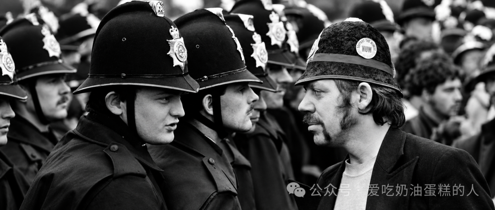
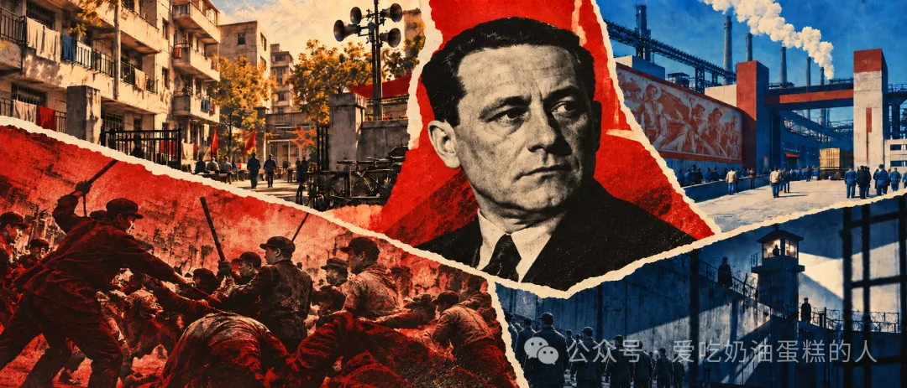